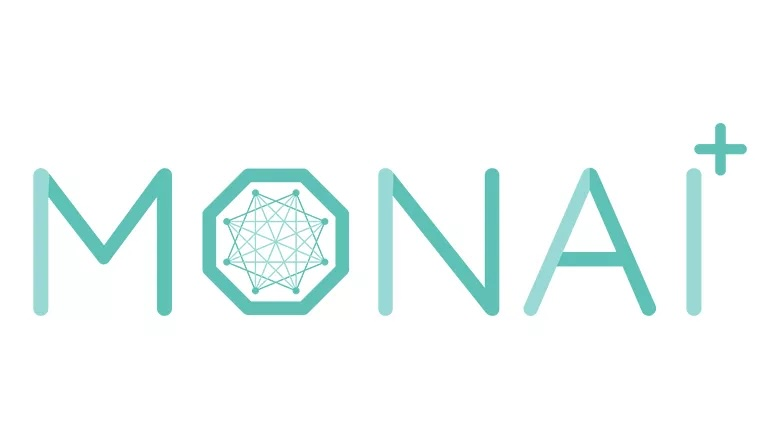

ML+X Nexus: Crowdsourced ML Resources
Nexus is the ML+X community’s centralized hub for sharing machine learning (ML) resources. Visit the ML+X website to learn more about the community, and join the ML+X google group to stay informed on upcoming community events!
What kinds of resources are hosted on Nexus?
Any content (original or external) that can help make the practice of ML more connected, accessible, efficient, and reproducible is welcome on the Nexus platform! This includes, but is not limited to:
ü߆ Educational materials: Explore a library of educational materials (workshops, guides, books, videos, etc.) covering a wide range of ML-related topics, tools, and workflows, from foundational concepts to advanced techniques. These materials offer clear explanations, practical examples, and actionable insights to help you navigate the complexities of ML with confidence.
üߨ Applications & stories: Discover a curated collection of blogs, papers, and talks which dive into real-world ML applications and lessons learned by practitioners. This section also includes exploratory data analysis (EDA) case studies, which demonstrate the technical and domain knowledge needed to explore data from various fields.
üõ† Models, code, and more: Learn about popular pretrained & foundation models, useful scripts, and datasets that you can leverage for your next ML project. Learn about their features, how to use them effectively, and see examples of them in action.
Make a contribution to Nexus!
This website is a team effort! We welcome and encourage fellow practitioners to contribute resources to Nexus. Learn more by visiting How to contribute.
Explore Resources
Learn
| Author | Date | Title | Description | Categories | |
|---|---|---|---|---|---|
|
|
Books | ||||
|
|
Guides | ||||
|
|
Videos | ||||
|
|
Workshops | UW-Madison has its own local Carpentries community which is actively engaged in developing and teaching new ML/AI workshops. To be notified of upcoming workshops offered by… | |||
| 2024-07-26 |

|
Grokking | The verb, “to grok”, was originally coined by Robert A. Heinlein in his 1961 science fiction novel “Stranger in a Strange Land,” where it meant to understand something so… | Deep learning, Empirical patterns, Grokking, Videos, Guides | |
| 2024-07-18 |

|
Intro to Python (Carpentries) | The Plotting and Programming in Python workshop provides an introduction to programming in Python 3 for people with little or no previous programming experience. It uses… | Python, Workshops, Carpentries, Code-along | |
| 2024-07-17 |

|
Intro to Machine Learning with Sklearn (Carpentries) | The Intro to Machine Learning with Sklearn workshop from the Carpentries will walk you through introductory machine learning concepts as well as how to implement common ML… | Classical ML, Sklearn, Workshops, Carpentries, Code-along | |
| 2024-07-16 |

|
Intro to Deep Learning with Keras (Carpentries) | The Intro to Deep Learning with Keras workshop from the Carpentries will walk you through introductory deep learning concepts as well as how to build a neural networks in… | Deep learning, Keras, Workshops, Carpentries, Code-along | |
| 2024-07-15 |

|
Intro to Deep Learning with PyTorch (Udacity) | The Intro to Deep Learning with PyTorch workshop from Udacity will walk you through introductory deep learning concepts as well as how to build a neural networks in PyTorch.… | Deep learning, PyTorch, Workshops, Udacity, Code-along | |
| 2024-07-14 |

|
Understanding Deep Learning | Nowadays, nearly anyone can implement a deep learning model in a just a few lines of code. What separates the novices from the experts, however, is the ability to understand… | Deep learning, PyTorch, Books, Code-along | |
| 2024-07-13 |

|
Intro to Text Analysis / NLP (Carpentries) | The Intro to Text Analysis workshop introduces the field of Natural Language Processing (NLP) and how to gain insights from collections of text data (i.e., a corpus). This… | Deep learning, Hugging Face, Text analysis, NLP, LLM, Workshops, Carpentries, Code-along | |
| 2024-07-12 |

|
Overview of Reproducibility Lecture | Dr. Sarah Stevens’ lecture highlights the critical importance of reproducibility in computational and data science projects. She also shares best practices to ensure… | Reproducibility, Videos | |
| 2024-07-11 |

|
Version Control with GitHub Desktop | Navigating the world of version control systems like Git can initially feel daunting, especially for those new to programming or collaborative software development projects.… | Reproducibility, Git/GitHub, Guides, Code-along | |
| 2024-07-11 |

|
Version Control with Git and GitHub (Carpentries) | The below video (and the 7 subsequent videos in the workshop playlist) will walk you through this introductory Git workshop from the Carpentries: Version Control with… | Reproducibility, Git/GitHub, Workshops, Code-along, Videos | |
| 2024-07-11 |

|
Out-of-Distribution Detection | The below tutorial from Sharon Li, an Assistant Professor in the Department of Computer Sciences at the University of Wisconsin-Madison, introduces a pervasive problem faced… | OOD detection, Trustworthy ML, Videos | |
| 2024-06-24 |

|
How to Contribute? | We want Nexus to serve also as a place where members of the community can share their knowledge. This guide answers the question, how to contribute to Nexus? | Contribute, Guides |


Toolbox
| Author | Date | Title | Description | Categories | |
|---|---|---|---|---|---|
|
|
Compute | Explore compute resources (high-throughput, GPUs, etc.) for your next ML project! | |||
|
|
Models | Explore popular model hubs, pretrained models, and foundation models. | |||
| 2024-09-16 |

|
U-Net: Convolutional Networks for Biomedical Image Segmentation | U-Net is a convolutional neural network architecture designed for biomedical image segmentation. Introduced in 2015 by Ronneberger and colleagues in the paper, “U-Net… | Deep learning, Medical imaging, Image segmentation, CNN, Models | |
| 2024-08-14 |  | MONAI: Medical Open Network for AI | MONAI (Medical Open Network for AI) is an open-source, community-supported framework for deep learning in healthcare imaging. Built on top of PyTorch, it provides‚Ķ | Deep learning, PyTorch, Medical imaging, Model hub | |
| 2024-06-25 |

|
Center for Highthroughput Computing (CHTC) | Established in 2006, the Center for High Throughput Computing (CHTC) is committed to democratizing access to powerful computing resources across all research domains. High… | Compute, GPU, Guides |


Applications
| Author | Date | Title | Description | Categories | |
|---|---|---|---|---|---|
|
|
Blogs | Are you currently immersed in an exciting ML project? We want to hear about it! Share your insights, challenges, and successes by contributing a blog post to Nexus, the ML+X… | |||
|
|
Exploratory analysis | Are you passionate about data and keen to share your insights? We invite you to contribute to our exploratory data analysis (EDA) case studies on Nexus. | |||
|
|
ML+X Forums | Explore our library of ML+X forum recordings below! Each monthly ML+X forum highlights two ML applications that share a theme followed by communal discussions and project… | |||
|
|
SILO | The Systems, Information, Learning and Optimization (SILO) research group at the University of Wisconsin-Madison hosts a weekly seminar that covers a variety of topics… | |||
|
|
Highlights | Discover a curated collection of talks which dive into ML applications and lessons learned by practitioners. | |||
| Playlists | In addition to posting individual, highlighted ML applications from conferences, webinars, etc., the Nexus platform curates a list of playlists where you can explore a… | ||||
| 2024-10-07 |

|
Titanic Dataset | The Titanic dataset is a well-known dataset that contains information about the passengers of the Titanic ship.It includes variables such as age, gender, class, fare, and… | EDA, Tabular, Classification | |
| 2024-09-16 |

|
Vision, Language, and Vision-Language Modeling in Radiology | In this ML4MI seminar, Tyler Bradshaw highlights the history and current use of vision (e.g., UNET), language, and vision-language models in medical imaging. | ML4MI, Medical imaging, VLM, ViT, UNET, LLaVA, Computer vision, CNN, LLM, Deep learning, Multimodal learning | |
| 2024-09-11 |

|
What Tune Is That? A Humanities Application of Deep Learning | Deep learning (neural network training) can solve humanities challenges, too! Read about a successful project that trained a model to be able to identify Irish traditional… | Blogs, Deep learning, Conformer, Transformer, CNN, Humanities, Audio, Music, CSI, Time-series | |
| 2024-06-18 |

|
A Biophysics-based Protein Language Model for Protein Engineering | We introduce Mutational Effect Transfer Learning (METL), a specialized protein language model that bridges the gap between traditional biophysics-based and machine learning approaches by incorporating synthetic data from molecular simulations. | Cross Labs AI, Transfer learning, Biophysics, Protein language models, Foundation models, LLM, Deep learning, Protein engineering, Simulations | |
| 2024-04-09 |

|
Advancing Healthcare and Agriculture through Computer Vision |
1. An ultrasound-based method to measure knee kinematics enabled by deep learning 2. Plant breeding in the age of computer vision |
ML+X, Computer vision, Ultrasound, Medical imaging, Agriculture, LSTM, CNN-LSTM, CNN, Deep learning | |
| 2024-03-12 |

|
Exploring Model Sharing in the Age of Foundation Models |
1. Model sharing and reproducible ML 2. LLaVA-NeXT and model sharing |
ML+X, Multimodal learning, Foundation models, Model sharing, Hugging Face, LLM, LMM, LLaVA, Deep learning | |
| 2024-02-13 |

|
Navigating Gravitational Waves with AI Insights |
1. Welcome and small group discussions 2. Classifying gravitational wave modes from core-collapse supernovae |
ML+X, Physics, Simulations | |
| 2023-12-12 |

|
Exploring Science Communication and Drug Synergy Analysis using GPT |
1. GPT for Science Communication: User-Interface and Developer Pipeline Approaches 2. Advancing Biomedical Research with GPT-4: A Novel Approach to Drug Synergy Analysis using Text Mining and Classification |
ML+X, Science communication, Healthcare, Drug synergy, LLM, Text mining | |
| 2023-11-22 |

|
World Knowledge in the Time of Large Models | This talk will discuss the massive shift that has come about in the vision and ML community as a result of the large pre-trained language and language and vision models such as Flamingo, GPT-4, and other models. | SILO, VLM, LLM, LMM, Multimodal learning, Foundation models, Knowledge-based | |
| 2023-11-07 |

|
LLMS in Genomic and Health Coaching |
1. Clustering of genomic sequences of mycoviruses using deep learning 2. Spurring self-improvement and intrinsic motivation using LLMs and reinforcement learning |
ML+X, Healthcare, Clustering, Deep learning, LLM, Genomics | |
| 2023-10-10 |

|
Time-Series Analysis |
1. Computational Methods for Comparative Time Clocks in Early Development and Tissue Regeneration 2. Controlled Differential Equations on Long Sequences via Non-standard Wavelets |
ML+X, Time-series, Genomics, Healthcare | |
| 2023-09-19 |

|
Multimodal Learning |
1. Multimodal learning and analysis for understanding single-cell functional genomics in brains and brain diseases 2. Transforming healthcare: AI-enhanced disease quantification with vision-language models 3. The benefits of early fusion: deeply integrated audio-visual representation learning |
ML+X, Multimodal learning, Deep learning, Computer vision, Healthcare, Genomics | |
| 2023-06-23 | Exploring AI at UW-Madison | A summer 2023 webinar series sponsored by the Division of Information Technology and the Data Science Institute. | Multidisciplinary, UW-Madison, Playlists | ||
| 2021-11-09 | ML+X Forum | Each monthly ML+X forum highlights two ML applications that share a theme followed by communal discussions and project feedback. | ML+X, Multidisciplinary, UW-Madison, Industry, Playlists | ||
| 2021-11-09 | SILO | The SILO research group at the University of Wisconsin-Madison hosts a weekly seminar that covers a variety of topics related to machine learning, optimization, and information theory | SILO, Multidisciplinary, UW-Madison, Industry, Playlists | ||
| 2018-02-01 |
|
Machine Learning for Medical Imaging (ML4MI) | Biomedial applications of ML (especially computer vision) at UW-Madison | UW-Madison, Playlists, Medical imaging |